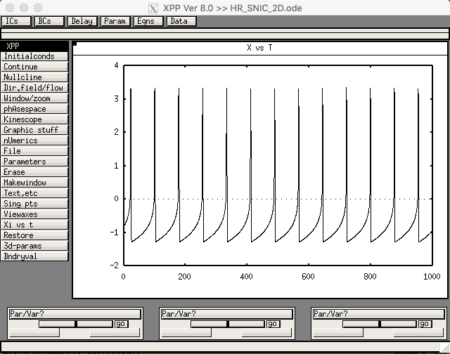
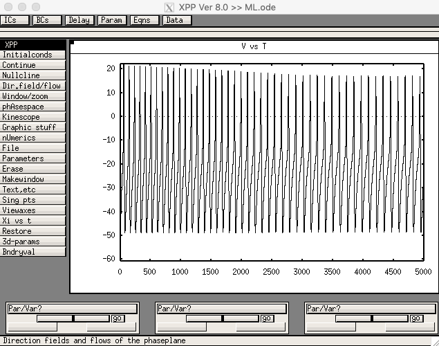

xppaut HR_SNIC_2D.odeThen select "Initialconds -> Go" in the GUI. It should produce the following:  The same file can be used to make the bifurcation diagram in Fig. 2A as follows: AUTO needs to start from a steady state, so Set the applied current I = -10, and run the system to a steady state. Then, bring up the AUTO window by selecting File -> Auto, and go successively through the menus:
 This corresponds to the curve labeled f0(I) in Fig. 2A. Note that since time in the model is in ms, the frequency has to be multiplied to 1000 to convert to Hz.
The 3D Hindmarsh-Rose model with adaptation and a SNIC in the 2D fast sub-system is defined in the file HR_SNIC.ode. Running with the default parameters should produce this screen shot, corresponding to Fig. 3B:
This corresponds to the curve labeled f0(I) in Fig. 2A. Note that since time in the model is in ms, the frequency has to be multiplied to 1000 to convert to Hz.
The 3D Hindmarsh-Rose model with adaptation and a SNIC in the 2D fast sub-system is defined in the file HR_SNIC.ode. Running with the default parameters should produce this screen shot, corresponding to Fig. 3B:
 Running AUTO with I as the bifurcation parameter should produce the adapted f-I curve shown as the dashed curve in Fig. 2A.
The 3D Hindmarsh-Rose model with adaptation and a Hopf bifurcation in the 2D fast sub-system is defined in the file HR_Hopf.ode. Running with the default parameters should produce this screen shot:
Running AUTO with I as the bifurcation parameter should produce the adapted f-I curve shown as the dashed curve in Fig. 2A.
The 3D Hindmarsh-Rose model with adaptation and a Hopf bifurcation in the 2D fast sub-system is defined in the file HR_Hopf.ode. Running with the default parameters should produce this screen shot:
 The version of Morris-Lecar is defined in ML.ode. The version with a SNIC, corresponding
to Fig. 11 in the paper (Sherman & Ha 2017), is defined in
ML_SNIC.set. The version with a Hopf bifurcation, corresponding to
Fig. 12, is defined in ML_Hopf.set. To bring one of those parameter sets into xpp, launch xpp using a command like
The version of Morris-Lecar is defined in ML.ode. The version with a SNIC, corresponding
to Fig. 11 in the paper (Sherman & Ha 2017), is defined in
ML_SNIC.set. The version with a Hopf bifurcation, corresponding to
Fig. 12, is defined in ML_Hopf.set. To bring one of those parameter sets into xpp, launch xpp using a command like
xppaut ML.odethen select "File -> Read Set" and choose the appropriate set file from the list. After reading in ML_SNIC.set, run the model by clicking "Initalconds -> Go" in the GUI. It should display a figure like: 
The f-I curves in Figs. 11 and 12 can be made by the same procedure as described for Hindmarsh-Rose above.